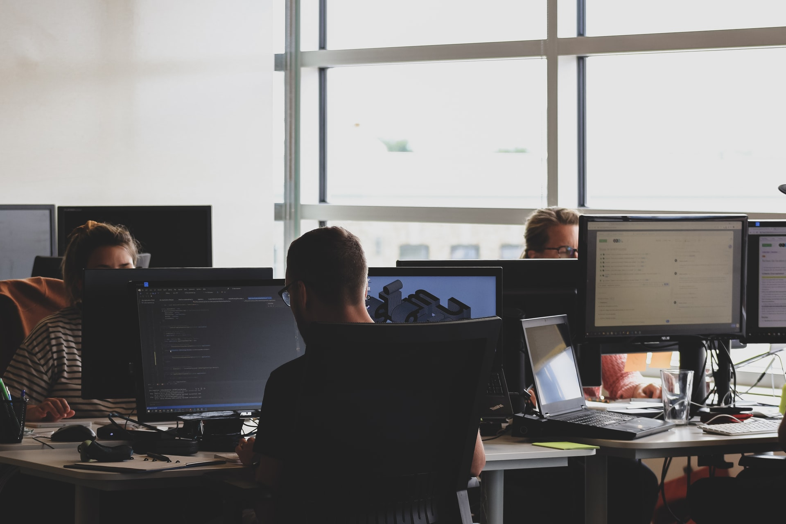

What is bespoke website design?
We often get asked exactly what bespoke website design is, what the benefits are compared to a less expensive off-the-shelf theme, or which type to choose.
A bespoke website is one that is designed and built for a specific set of users or purpose. This is the opposite of a theme or off-the-shelf website, which is a ready-made design. Website themes are a great way of getting your business online, especially if you are on a budget, you are a small business, in a rush, or if you need a portfolio or brochure site. If you have noticed lots of websites that look the same in recent years, it's because they are built using a theme.Created by talented designers, themes are stylish and generic templates that you can overlay with your brand elements like logo, colours and visuals. They can be downloaded for free, or you can pay for a premium theme if you'd like a slightly higher degree of customisation. With a theme, you know what you're getting, there's less development so you don't need as much technical knowledge and they are great for smaller companies.
